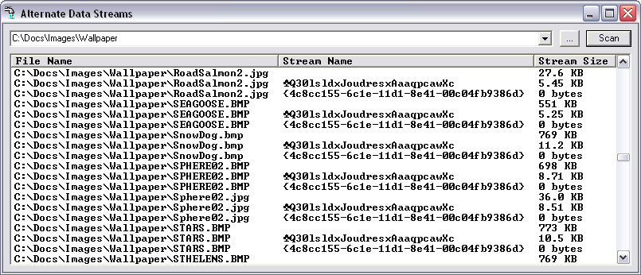

NTFS offers a devious mechanism known as Alternate Data Streams (ADS) useful primarily for obfuscating data.
The operating system may use it for stashing thumbnails of images (see below),
storing Summary property data for non-Office file types, or simply flagging
files that were downloaded from the Internet (so that it may forever pester you
about do you really want to open that?).
As little known as ADS themselves are, even less well-known is that ClassicVB
can pretty much manipulate ADS at will using dirt-standard file i/o functions.
Every file has a primary unnamed data stream, and each alternate data stream has
a name by which it is referenced. This is done by separating the filename and
the stream name with a colon. Here's an example of how easy it is to read and
write ADS in Classic VB:
Public Sub Main()
Call WriteFile("C:\test.txt", "This is a normal data stream.")
If WriteFile("C:\test.txt:MyADS", "This is an ADS.") Then
Debug.Print ReadFile("C:\test.txt:MyADS")
End If
End Sub
Public Function ReadFile(ByVal FileName As String) As String
Dim hFile As Long
On Error GoTo Hell
hFile = FreeFile
Open FileName For Binary As #hFile
ReadFile = Space$(LOF(hFile))
Get #hFile, , ReadFile
Close #hFile
Hell:
End Function
Public Function WriteFile(ByVal FileName As String, _
ByVal Text As String) As Boolean
Dim hFile As Long
On Error GoTo Hell
hFile = FreeFile
Open FileName For Output As #hFile
Print #hFile, Text;
Close #hFile
Hell:
WriteFile = Not CBool(Err.Number)
End Function
This sample provides a drop-in ready class you can use to enumerate ADS
within any file or folder on an NTFS disk. Yes, folders can have ADS as well,
though they never have the unnamed primary data stream. To use the CStreams
class, you simply declare an instance of it, and hand it a filename to work
with. Here's an example taken from the little demo app I put together to show
off the features of the CStreams class:
Dim lvItem As ListItem
Dim i As Long
' Look for ADS content in this file.
ads.FileName = FileSpec
If ads.Count > 1 Then
For i = 0 To ads.Count - 1
Set lvItem = lvFiles.ListItems.Add(, , ads.FileName)
lvItem.SubItems(1) = ads.PrettyName(i)
lvItem.SubItems(2) = dda.FormatBytes(ads.StreamSize(i))
Next i
End If
The code above is passed each filename in an enumeration, and if that
particular file contains streams other than the primary named stream they are
each added to a listview for display:

Here we see that Windows has tagged each image file with two ADS, including
one that uses Chr$(5) as it's lead character so I had to switch to an OEM stock
font to view the name properly. (To switch fonts using the demo, just
right-click on the listview.)
The CStreams class is very simple, and offers only a few properties and
methods. Since a given file or folder may contain any number of ADS, the class
offers information about any particular ADS by index (0 to Count-1). Here's a
summary of the CStreams interface:
| Count Property |
Returns the number of ADS within a file or folder.
(read-only) |
| FileName Property |
Sets or returns the name of the file or folder being enumerated
for ADS. |
| FullPathName Method |
Wrapper around the GetFullPathName API, used to disambiguate
relative pathspecs. |
| KillStream Method |
Deletes an ADS from any file or folder, by Index. |
| Refresh Method |
Updates all cached ADS info for given file or folder. Called
automatically when FileName property is assigned. |
| PrettyName Property |
Returns the "cleaned-up" name of a given ADS by stripping off
the leading colon and the trailing (superfluous) ":$DATA" tail,
by Index.
(read-only) |
| StreamIndex Property |
Returns the Index for an ADS of any given name. Useful for
testing whether a known stream name exists in a file or folder.
(read-only) |
| StreamName Property |
Returns the name of any ADS in a file or folder, by Index.
(read-only) |
| StreamSize Property |
Returns the size (in bytes) of any ADS in a file or folder, by Index.
(read-only) |
| StreamSupport Method |
Returns boolean that indicates whether ADS support is available
for a given FileName. |
Bonus Material
This sample comes with lots of little extras, including a highly optimized
recursive file search class (CDirDrillAPI) and a module that offers easy folder browsing
(MFolderBrowse). Both
of those are also directly usable in VBA as well as either VB5 or VB6.